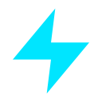

NexaFlow
Chrome Companion
Desktop connection
Click Pair, then approve the request in NexaFlow Desktop.
Browser workflow
Desktop quick controls
About
NexaFlow Companion records browser workflows and controls NexaFlow Desktop after user-approved pairing.
Version 1.0.0